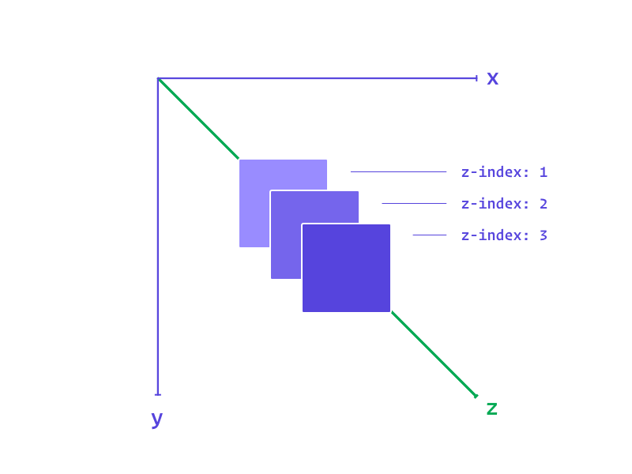

O básico do z-index
O z-index é a propriedade do CSS que define o posicionamento dos elementos no eixo Z, ou seja, ele define a distância do elemento em relação a tela, mais próximo ou mais afastado.

Somente os elementos que contém position absolute, relative ou fixed aceitam o z-index. Quanto maior for o valor, mais próximo da tela ele ficará.
Basicamente, não existem limitações para o valor do z-index. Mas a maioria dos browsers trabalha com os valores de 32 bits (−2147483648 para +2147483647). Sim, ele aceita valores negativos.
.box {
position: absolute;
z-index: 1;
}
.box-2 {
position: absolute;
z-index: 2;
}
.box-3 {
position: absolute;
z-index: 3;
}